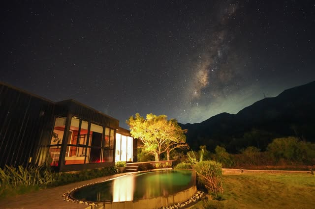

01 / UNWIND
A slower kind of blue.
A poolside pause, a little sunshine, and nowhere else you need to be.
✳ A PRIVATE ESCAPE IN RIVERSTON
Leave the everyday behind.
Find your own rhythm at The Riv.
Your next deep breath starts here.
WELCOME TO THE RIV
Tucked into the green of Riverston, The Riv is a three-bedroom convertainer villa made for a change of pace.
Contemporary lines meet a wilder landscape. Mornings unfold slowly. And the best part of the day might be doing nothing at all.
A space to call your own ↗DESIGNED TO FEEL DIFFERENT
Glass-fronted spaces. Warm timber. Deep green surroundings. A distinctive container villa that brings the landscape into every quiet moment.

LESS HURRY. MORE HERE.
THE ART OF SLOWING DOWN
No crowded itinerary.
Just a few beautiful possibilities.
A poolside pause, a little sunshine, and nowhere else you need to be.
Let Riverston’s open landscapes invite you a little further outdoors.
The simple pleasure of watching the day turn into something golden.
TRAILS & ADVENTURES
A little curiosity. A good pair of shoes.
A whole landscape to discover.
Walk through the open grassland to Mini World’s End, where the landscape opens into sweeping valley views. Stay on the marked route and enjoy the viewpoint from a safe distance.
A broad cascade in the Dumbara landscape, reached by a descending path to a viewing platform. Ask about current road and path conditions before setting off; wet steps can be slippery.
Head into Riverston’s highland scenery for mountain views and shifting mist. Plan your outing around the day’s weather, with a light rain layer and time to linger.
Explore the forested slopes and varied trails of the Knuckles range. Ask the team about a local guide, a route suited to your group, and any access requirements before you go.
Make the day your own. The villa team can advise on current access, guides, transport and pricing when you enquire.
UNFILTERED LITTLE MOMENTS
Real moments, from our Instagram community. Photos and films open a window into The Riv.
YOUR WHATSAPP STAY PLANNER
Choose your dates, tell us what you love, and request a personalised quote
from The Riv on +94 77 174 3998.
YOUR OUT-OF-OFFICE STARTS HERE
For rates and availability, connect with The Riv on WhatsApp.
+94 77 174 3998